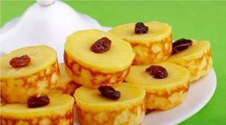

Membuat kue adalah kegiatan yang mengasyikkan. Terlebih jika Anda adalah orang yang suka berkreasi dengan bahan-bahan serta peralatan membuat kue. Seperti yang akan dibahas kali ini, yaitu kue wajan. Wajan teflon notabene digunakan untuk memasak sayur atau menggoreng lauk. Namun siapa sangka bahwa alat masak yang satu ini juga bisa digunakan untuk membuat aneka kue unik nan kreatif. Selain hanya memerlukan bahan-bahan sederhana, membuat kue wajan juga cukup mudah.
Berikut beberapa resep kue wajan yang bisa Anda praktikkan sendiri di rumah. Anda dapat menyuguhkan kue-kue wajan ini sebagai camilan harian ataupun sebagai snack di berbagai acara. Melansir dari briliofood.net, ini dia selengkapnya. Selamat mencoba!1. Pie Susu
Bahan:
- 100 gram margarin
- 10 sendok makan tepung teriguBahan krim susu:
- 5 sendok makan air
- 4 sachet kental manis putih
- 1 kuning telur
- 1 sendok makan tepung maizena
- 1/4 sendok teh garam
- 1/4 sendok teh vanili bubukCara membuat resep kue wajan:
- Campur tepung terigu dan margarin, uleni. Ratakan di wajan teflon. Tusuk-tusuk dengan garpu.
- Campur semua bahan krim susu, aduk rata. Tuang ke atas pai.
- Tutup teflon, masak dengan api kecil selama 40 menit. Tunggu sampai dingin.
- Potong pai susu, sajikan dengan potongan buah di atasnya.
2. Brownies Oreo
Bahan:
- 2 bungkus oreo @137gram
- 100 gram butter/margarine (cairkan)
- 1 butir telur
-100 gram meses
- 50 gram keju cheddar parut/parmesan
- 5 sdm susu cair cokelat (saya pakai Ovaltine)
- 1 sdt bubuk vanili
- 1 sdt SP/cake emulsifierCara membuat resep kue wajan:
- Campur semua bahan. Aduk rata.
- Oles loyang dengan butter. Tuang adonan.
- Tutup wajan rapat. Masak selama 20-30 menit.
- Taburi topping sesuai selera. Angkat.
3. Chiffon Pandan
Bahan A:
- 7 kuning telur
- 60 gram gula pasir
- 150 ml santan cair
- 100 ml minyak goreng
- pasta pandanBahan kering A:
- 150 gram terigu kunci biru
- 1 sdm tepung maizena
- 1 sdt baking soda
- 20 gram susu bubuk putih
- 1/2 sdt garam halusBahan B:
- 7 putih telur
- 1 sdt cream of tar tar
- 150-170 gram gula pasirCara membuat resep kue wajan:
- Campur semua bahan kering A.
- Kocok telur bahan A, campur gula pasir sampai tercampur rata.
- Masukkan bahan kering, campur minyak. Aduk rata. Tambahkan adonan kuning telur tadi.
- Bahan B, kocok putih telur sampai berbusa. Masukkan cream of tar tar, kocok sambil masukkan gula pasir secara perlahan. Kocok hingga mengembang.
- Masukkan adonan B sebanyak 2 centong ke bahan A, aduk rata.
- Gabungkan semua bahan sambil diaduk perlahan. Tambahkan pasta pandan, aduk rata.
- Tuang ke loyang setinggi 1/2 bagian, panggang hingga matang merata.
4. Kue Cucur
Bahan:
- 150 gram gula merah
- 250 ml air
- 2 lembar daun pandan
- 100 gram tepung beras
- 100 gram tepung terigu
- 1/2 sdt garam
- minyak goreng secukupnyaCara membuat resep kue wajan:
- Campur gula merah, air, garam, dan daun pandan. Masak hingga mendidih.
- Campur tepung terigu dan tepung beras. Tuangkan dan saring air gula tadi.
- Mixer hingga rata. Tutup adonan, diamkan 30 menit.
- Panaskan wajan dengan minyak, kecilkan api. Tuang 1 sendok sayur adonan, tunggu hingga pinggiran mengembang. Balik, tunggu hingga kedua sisi matang.
11. Cereal Pancake
Bahan kering:
- 1 1/2 cup (210 gr) terigu
- 3 sdm (48 gr) gula pasir
- 1 sdt baking powder
- 1/2 sdt baking soda
- 1 sdt garamBahan basah:
- 2 telur kocok rata
- 1 cup (240 ml) buttermilk (jika tidak ada beri susu uht hangat dengan 2 sdm jeruk nipis, biarkan 15 menit)
- 2 sdm butter lelehkan
- 1 sdm vanila ekstrakCara membuat resep kue wajan:
- Campurkan, aduk rata bahan kering, sisihkan.
- Di mangkuk terpisah, campurkan bahan basah sampai rata.
- Masukkan bahan basah ke bahan kering, lalu aduk tetapi jangan overmix karena tidak akan mengembang, diamkan di kulkas selama 15 menit.
- Panaskan wajan, oleskan sedikit butter ke wajan anti lengket lalu tuangkan 1 sdm ke wajan, tunggu sampai ada gelembung di permukaan lalu balik, angkat jika sudah kecokelatan, beri topping sesuai selera.